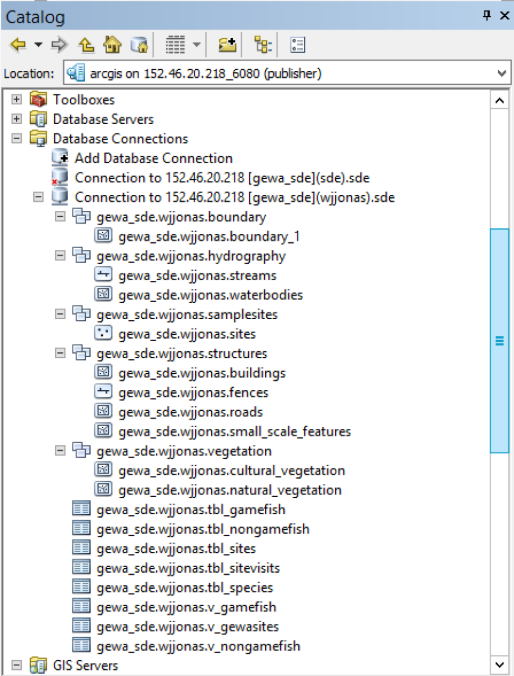
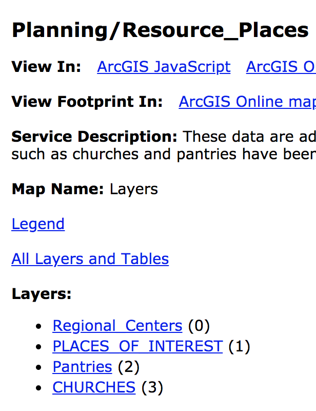
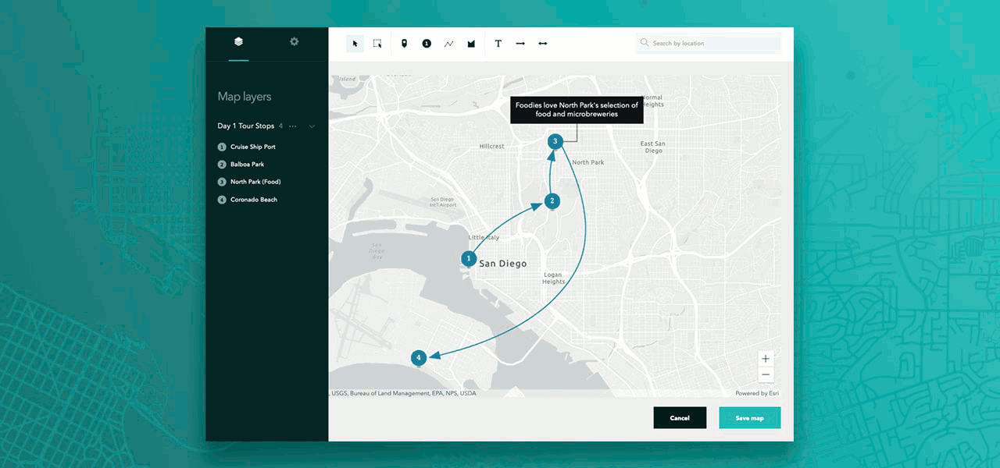
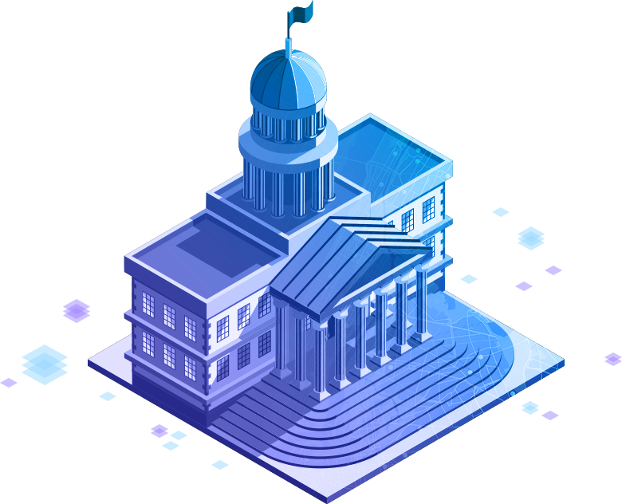
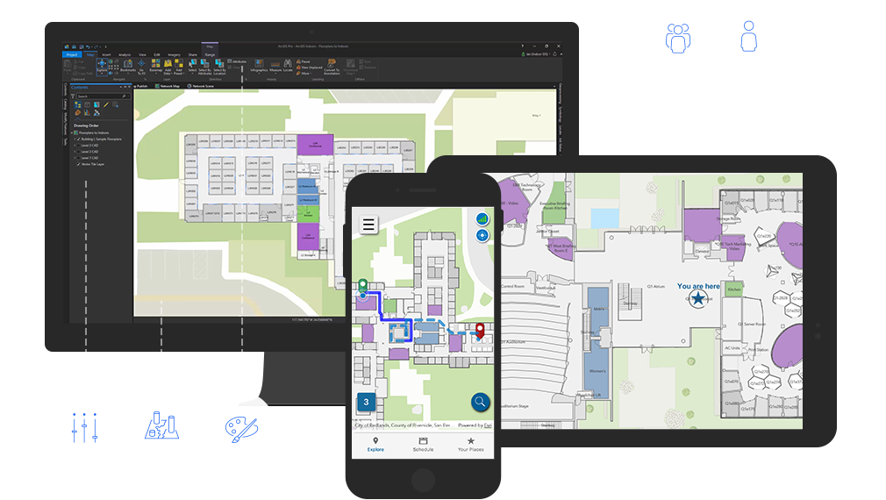

Collaboration
Jay Fowler
### Introductions - Who am I? - What do I do and why? <br> <!--<img height="200" src="img/img/dawn.jpg">--> <img height="200" src="img/img/jay.jpg">
#### https://arcg.is/8SqTD <img height="150" src="img/img/CollaborationQR.png"><br> <iframe width="900" height="450" src="https://arcg.is/1m4CiL"></iframe>
### Common Collaboration Complications Most people want to collaborate... What's in the way? * Time * Goals * Technology * Relationships * Fear - Give and not get and Oversharing
### How can Esri Help you Collaborate?
### Collaboration: Sharing <img width="65%" src="https://trello-attachments.s3.amazonaws.com/5b102b5cfab11eb264dfd1ea/5ba155765fc3da6e435ef06e/39fb65746e9c8cdd8fc20a3ba86eb27a/Enterprise_Organizes.png"> - Searching - Identity and Sharing Model - Uniting Enterprise Sytems
### Collaboration: Sharing 
### Collaboration: Sharing * [Click Here](https://maps.wakegov.com/arcgis/rest/services/Property/Parcels/MapServer/) <br> 
### Enabling Everyone <img width="95%" src="https://trello-attachments.s3.amazonaws.com/5a7360ee14becb79ff317d7f/5beb3d0c57b9a402e2c41e68/fff27816132373a3646087ffec157551/Slide3.png">
### [Let's take a Look!](https://cltportal.esri.com/portal/home/) 311 Layer Search <img style="background:none; border:none; box-shadow:none;" height="370" src="img/img/aec.png">
### Collaboration: Sharing <img style="background:none; border:none; box-shadow:none;" height="370" src="img/img/DCpattern1.png"><img style="background:none; border:none; box-shadow:none;" height="370" src="img/img/DCpattern2.png"><img style="background:none; border:none; box-shadow:none;" height="370" src="img/img/DCpattern3.png"> - For Easy Distribution - Distributed Collaboration
### Collaboration: Engaging <img width="65%" src="https://trello-attachments.s3.amazonaws.com/5b102b5cfab11eb264dfd1ea/5ba155765fc3da6e435ef06e/5a8ac80915186fb2b4aa7bfe6ab43cd4/Enterprise_Anywhere_Anytime_Anydevice.png"> - For working groups - Enterprise Sites / Hub - Groups
### Case Study: [Hilton Head Island, SC](img/img/HHI.pdf) --- ### Case Study: [Wake County NC](https://maps.wakegov.com/parklocator/app/#!/whiteoakpark)
### [Let's take a Look!](https://jf-department-page-ourcityc.hub.arcgis.com/) <img style="background:none; border:none; box-shadow:none;" height="370" src="img/img/aec.png">
### Collaboration: Storytelling  - *New* StoryMaps! - Simple mapmaking - Stylish and modern - Narrative with strong sense of place and spatial relationships
### Case Study <img style="background:none; border:none; box-shadow:none;" width="35%" src="https://www.arcgis.com/sharing/rest/content/items/a8b2eebe8c70420c874a6be3cc00950b/resources/CityOH_Logo_new__1560258920576__w645.png"><br> * [Oak Hill Hub](https://gis-cityoh.opendata.arcgis.com/pages/city-council) * [Oak Hill Council StoryMap](https://cityoh.maps.arcgis.com/apps/MapSeries/index.html?appid=a8b2eebe8c70420c874a6be3cc00950b)
### [Let's take a Look!](https://storymaps.arcgis.com/stories/c87bc0a59c0144008e25d50a5dd1b192) ### [Let's take a Look 2!](https://storymaps.arcgis.com/stories/dfe13d997d9b4741b83572858adcef78?adumkts=product&aduc=email&adum=list&utm_Source=email&aduca=mi_arcgis_storymaps_adoption&aduco=getting_started&adut=577312_Jul2019&adulb=marketing_sales&adusn=multiple&aduat=storymap&adupt=community&sf_id=701f2000001C5C8AAK&aducp=newsletter_column_right_01) <img style="background:none; border:none; box-shadow:none;" height="370" src="img/img/aec.png">
### Collaboration: Soliciting Input - [Crowdsourcing and Public Commenting](https://www.arcgis.com/apps/CrowdsourceReporter/index.html?appid=f3fc3656a7ec40309e30c535e63f8554) - [Review Processes](https://www.arcgis.com/apps/CrowdsourceManager/index.html?appid=1179379804ef41bf994d7c5ddb8e3928) - [Work requests](https://www.arcgis.com/apps/Cascade/index.html?appid=bc726c8f50f94d429c736151ff769d4f) 
### Collaboration: Finding people, places, assets, work - Indoors - Tracker 
### In sum: How Esri can help Collaborative Capabilities - Sharing - Engaging - Storytelling - Soliciting input - Wayfinding (People, places, work) <p class="fragment">AND your Esri account team!</p>